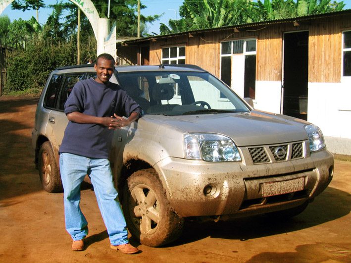

T: +251 911 123 461
E: DemissMamao@Yahoo.com
E: DemissMamao@Yahoo.com
Driver. Translator. Guide.
I have been driving professionally in Ethiopia for many years, I have been lucky enough to meet a wide variety of people and have had the opportunity to see all of Ethiopia. Ethiopia is a beautiful country with beautiful people and an amazingly diverse culture.
I know the the way and the best places:
I started my career as a Taxi driver in Addis Ababa, where I spent years driving around the Capital - this meant that over time I grew very proficient in City driving and also developed a strong mental map of the country's biggest city. I know the locations of many hotels, embassies, museums and reliable retailers as well as some of the amazing places to eat throughout the city.
With this knowledge, I then moved into private driving for visiting tourists, scientists, businessmen and government officials. This new job took me all over Ethiopia from the Omo Valley to the Desse lake Estifanos monastery and as far out as the Asosa, near the Sudanese border. I have vast experience in driving cross country on many terrain types as well as driving in multiple vehicles.
Private Guide and Translator:
With over 90 different languages spoken across the country of Ethiopia, it's important to have a driver who understands not only the most common langauge - Amharic - but also has an understanding of many of the other native languages. I grew up in a monastary and was taught the ancient Ethiopian language of Ge'ez - this helps me understand and interpret many of the Ethiopian languages. Growing up in a monastary also taught me about the history of Ethiopia and I have an in depth understanding of the different cultures and traditions across the country.
I Love to Meet New People:
During my journeys I have seen some amazing things and met some incredible people. I love my job because I get the opportunity to drive all over my country and help people see Ethiopia, the way it should be seen. I look forward to the future and I hope I can be of service if you are planning on visiting Ethiopia. Demiss Mamo - Ethiopian Tour Driver.
I know the the way and the best places:
I started my career as a Taxi driver in Addis Ababa, where I spent years driving around the Capital - this meant that over time I grew very proficient in City driving and also developed a strong mental map of the country's biggest city. I know the locations of many hotels, embassies, museums and reliable retailers as well as some of the amazing places to eat throughout the city.
With this knowledge, I then moved into private driving for visiting tourists, scientists, businessmen and government officials. This new job took me all over Ethiopia from the Omo Valley to the Desse lake Estifanos monastery and as far out as the Asosa, near the Sudanese border. I have vast experience in driving cross country on many terrain types as well as driving in multiple vehicles.
Private Guide and Translator:
With over 90 different languages spoken across the country of Ethiopia, it's important to have a driver who understands not only the most common langauge - Amharic - but also has an understanding of many of the other native languages. I grew up in a monastary and was taught the ancient Ethiopian language of Ge'ez - this helps me understand and interpret many of the Ethiopian languages. Growing up in a monastary also taught me about the history of Ethiopia and I have an in depth understanding of the different cultures and traditions across the country.
I Love to Meet New People:
During my journeys I have seen some amazing things and met some incredible people. I love my job because I get the opportunity to drive all over my country and help people see Ethiopia, the way it should be seen. I look forward to the future and I hope I can be of service if you are planning on visiting Ethiopia. Demiss Mamo - Ethiopian Tour Driver.
Click the image below to visit my trip advisor and see what people have to say about my services